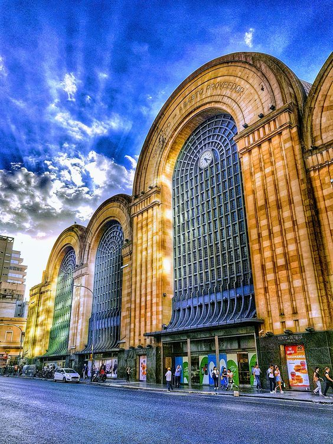
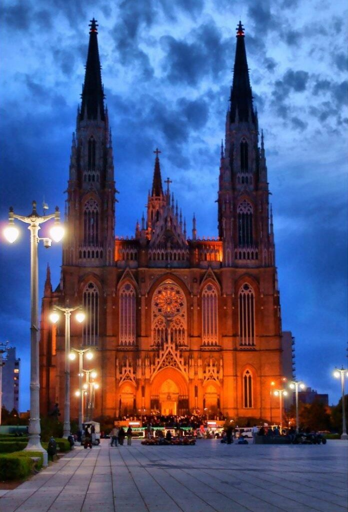
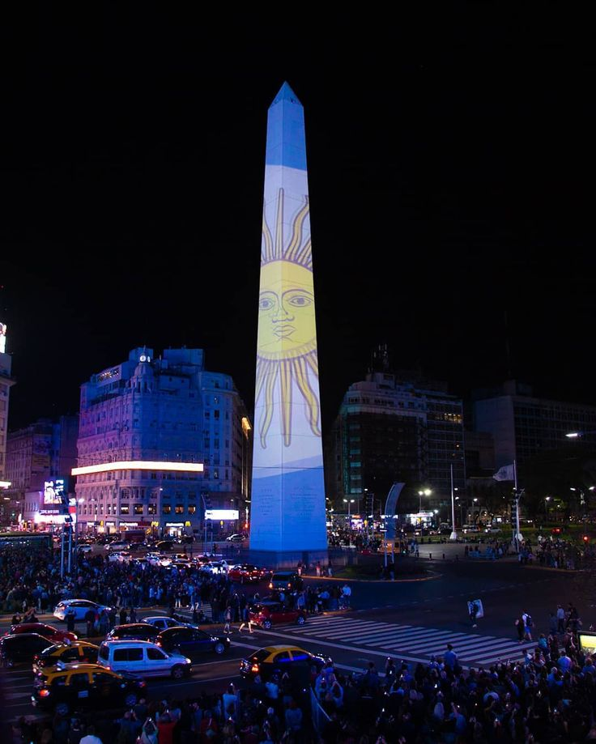
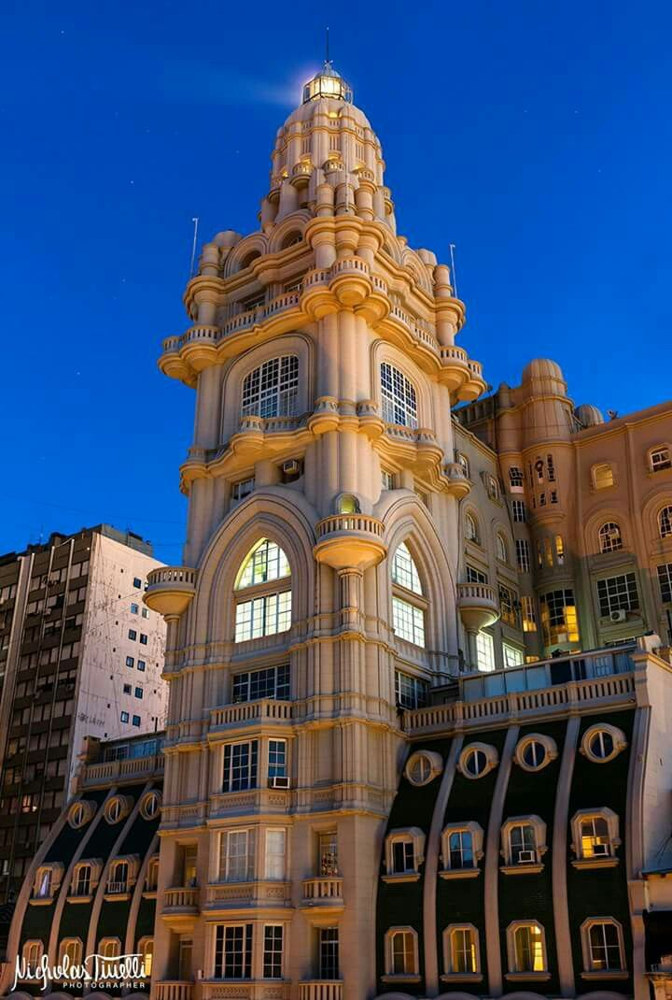
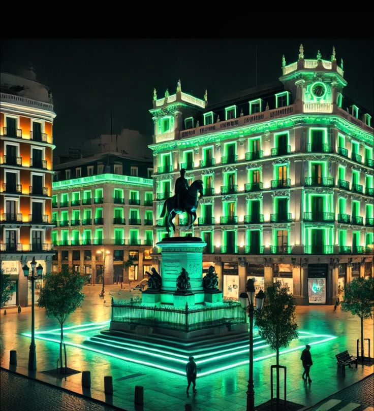
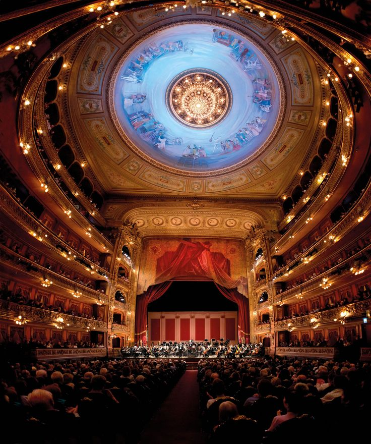
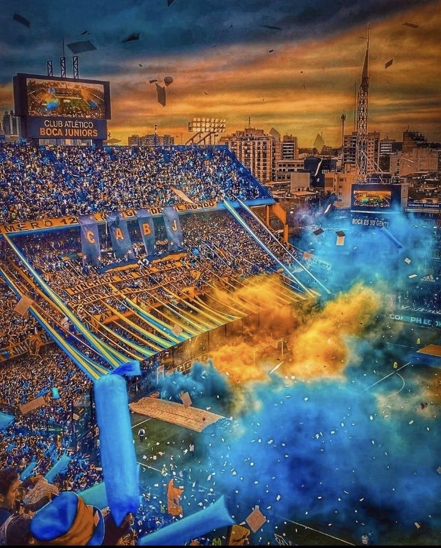
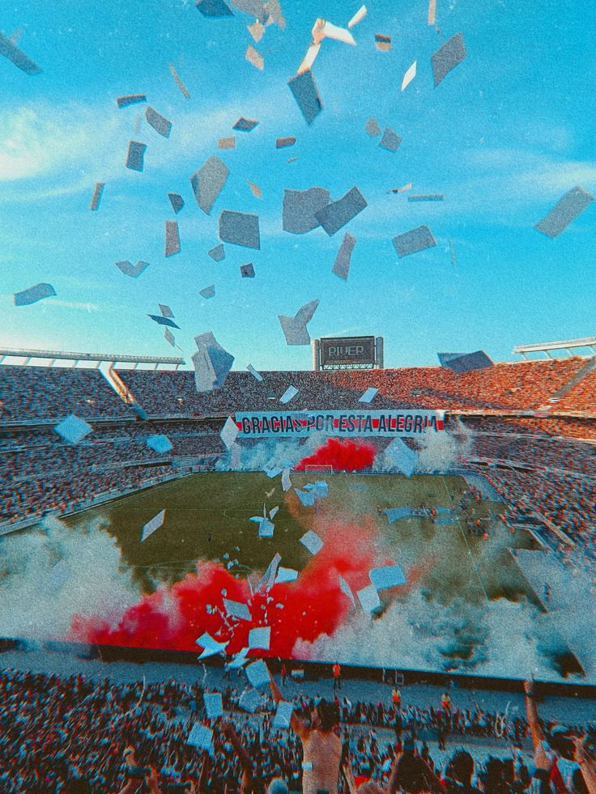

The Abasto Shopping is one of the largest shopping
malls in Buenos Aires, Argentina. The building
was the central wholesale fruit and vegetable market
of the city ("Mercado de Abasto") from 1893
to 1984. Since 1999 it operates as a
shopping mall. It is also famous for its presence
in the area where tango singer
Carlos Gardel, known as El Morocho del Abasto
("the dark-haired guy from Abasto"), lived for
most of his life.

The Metropolitan Cathedral of the Most Holy Trinity
(Catedral Metropolitana de la Santísima Trinidad), is a
Roman Catholic cathedral in Buenos Aires. It is located in
the city center, overlooking Plaza de
Mayo, at the corner of San Martín and
Rivadavia streets, in the San Nicolás neighborhood. It is the mother
church of the Archdiocese of Buenos Aires and held
the title of the Primatial Church of Argentina
from 1822 to 2024. The cathedral was declared a
National Historic Monument in 1942.

The Obelisk of Buenos Aires (Obelisco de Buenos Aires)
is a national historic monument and an iconic landmark
of Buenos Aires. It is located in Plaza de la República
at the intersection of the avenues Corrientes and
9 de Julio, it was built in 1936 to
honor the 400th anniversary of
the first founding of the city. Its height
is 67.5 meters, and 63 meters of that
of that reach up to the start of the top, which
measures 3.5 by 3.5 meters. The tip is
blunt, measures 40 centimeters, and ends in a lightning rod
that cannot be seen by the human
eye due to the height.

Palacio Barolo is a landmark office building for the city,
located at 1370 Avenida de Mayo,
in the neighborhood of Montserrat. It stood as the tallest
building in Buenos Aires for more than a
decade, until the construction of the Kavanagh Building
in 1936. The ..."twin brother" of Palacio Barolo,
Palacio Salvo, is a building designed
and built in Eclectic style by the same
architect (Mario Palanti) in Montevideo.
The building was declared a national historic monument in 1997.
Currently, the building hosts various travel
agencies, a Spanish school for foreigners,
a shop selling tango clothes,
offices and studios of architects, accountants, lawyers
and designers.

Plaza de Mayo (May Square)
is the city's main square and
the central founding site of Buenos Aires!
It was created in 1884 after the demolition of
the Recova building, uniting the city's Plaza Mayor
and Plaza de Armas
which were then known as Plaza
de la Victoria and Plaza 25 de
Mayo, respectively. Plaza de Mayo,
in the center of Buenos Aires, has been the stage
for the most important events in Argentine history,
as well as the largest popular protests in the country.
During the anniversary of the May Revolution in 1811,
the May Pyramid was erected in the center of the square,
becoming the first
national monument of Buenos Aires.

Teatro Colón (The Columbus Theatre)
is a historic opera house. It is considered one of the
ten best opera houses in the world by
National Geographic. According to a survey conducted
by acoustics expert Leo Beranek among
top international opera and orchestra conductors,
Teatro Colón has the hall with the
best acoustics for opera and the second best
for concerts in the world. The current Colón replaced
an original theater that opened in 1857. Towards
the end of the century, it became clear that a new
theater was needed, and after a 20 year process,
the current theater opened on May 25, 1908,
with Aida by Giuseppe Verdi.

La Bombonera (Translation: The box of chocolates!),
is a football stadium. It has a total capacity of 57.200
seats. The stadium belongs to Boca Juniors, a
football club based in the La Boca neighborhood
and one of the top teams in Argentina, which has
over 18 million fans, the most in
Argentina and about 40% of the total population
of the country! The unusual shape of the stadium has
given it excellent acoustics.
The stadium is widely considered one of the
most iconic stadiums in the world due to its design
the club's history, iconic matches,
the intense atmosphere and the stories of legendary
players who stepped onto the pitch like Diego Maradona,
Lionel Messi, Pelé,
Ronaldo Nazário etc.

Estadio Mâs Monumental, widely known as River
Plate Stadium, Monumental de Núñez, or simply El
Monumental, is a stadium in Buenos Aires, Argentina.
It has a total capacity of 86.049 seats. It is located in the neighborhood of Belgrano
(although popular belief wrongly states that
the stadium is located in the Núñez area), and the stadium
is owned and operated by Club Atlético
River Plate. It opened on May 26, 1938 and was
named after the club's former president
Antonio Vespucio Liberti (1900-1978). It is the largest
stadium both in Argentina and in all of
South America with a capacity of 86.049 and it also hosts
the Argentina national football team. It was
the main venue for the 1951 Pan American Games.
It hosted the 1978 FIFA World Cup final
between Argentina and the Netherlands. It has also hosted
four Copa América finals, most recently in 2011,
as well as several Copa Libertadores finals.